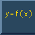
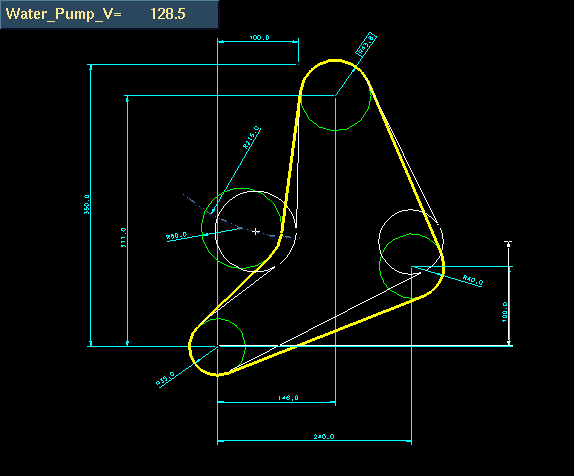

This VGx example shows how VGx enables the user to create their own equations to be solved interactivley as the user drags the dimensions.
Model file :- VGx_vignettes.mf*



Select a dimension.


Tech Tips
Be gentle with the drag, to large a mouse movement will cause the network to lock up..